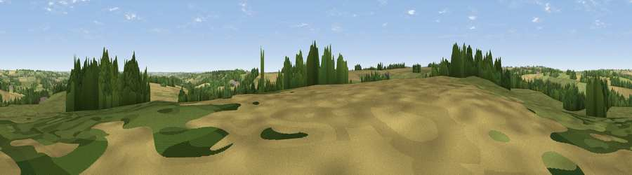

Viewpoint near Swerford
#37012 in England · top 81% of its area beats it · near SwerfordThe view, rendered

A 360° render of this exact spot computed from the terrain model, tree cover and land cover — summer colours, afternoon light, calibrated against photographs of famous viewpoints. Real trees, hedges and buildings will differ in detail.
The panorama
Grey silhouette: terrain skyline in each direction (720 bearings, Earth curvature and refraction included). Dashed green: skyline with trees (+15 m) and buildings (+8 m) as obstacles. Blue strip: how far the ground is visible on each bearing.
Where the view opens
Wedge length = distance to the farthest visible ground on that bearing (vegetation-aware). Rings at 10, 25 and 50 km.
What fills the view
48% grassland · 35% cropland · 16% woodland ·
Angular shares of the visible panorama (visual magnitude), not map area. Landscape diversity 0.46 (0–1 Shannon).
Key numbers
More beautiful places nearby
The staircase of upgrades: each row has a higher view potential than everything closer. Driving times are estimates from straight-line distance, calibrated against real road routing — check an actual route before setting out.
| Place | Direction | Drive | Score |
|---|---|---|---|
| Viewpoint near Barford St Michael | E · 4 km | ~10 min | 40.9 |
| Viewpoint near South Newington | ENE · 4 km | ~10 min | 45.1 |
| Viewpoint near Whichford | NW · 5 km | ~12 min | 52.3 |
| Viewpoint near Whichford | NW · 6 km | ~12 min | 57.8 |
| Viewpoint near Little Rollright | W · 9 km | ~18 min | 64.2 |
| Viewpoint near Little Compton | W · 10 km | ~19 min | 67.2 |
| Viewpoint near Upper Brailes | NW · 12 km | ~22 min | 68.5 |
| Viewpoint near Upper Tysoe | NNW · 12 km | ~22 min | 70.4 |
51.97149, -1.45589 · source: screening · position refined by local search. Computed location — check access rights before visiting.